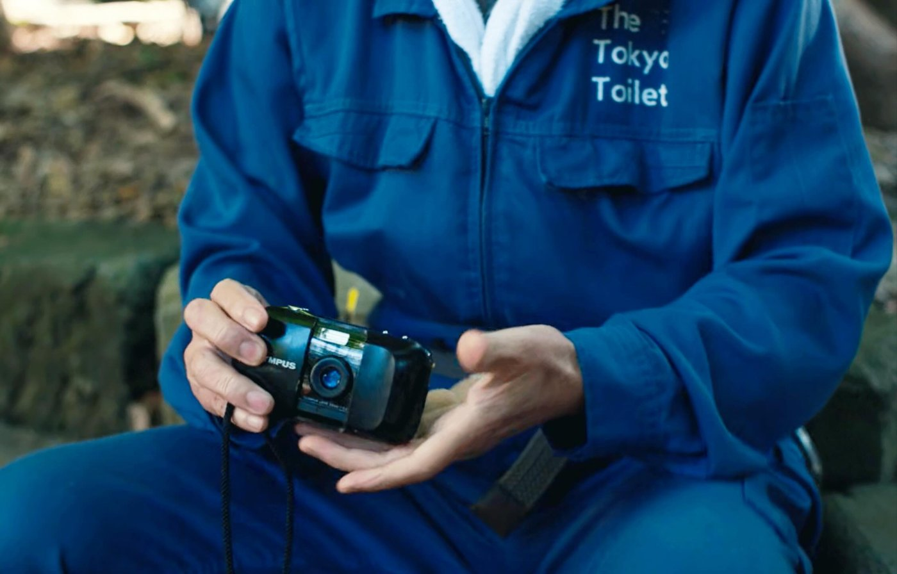
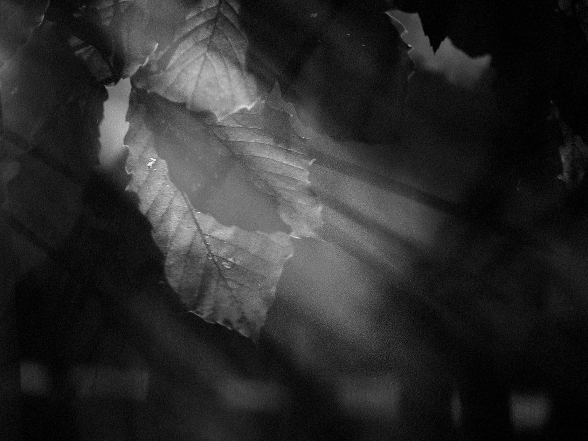
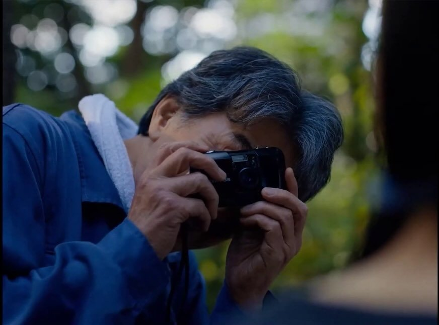
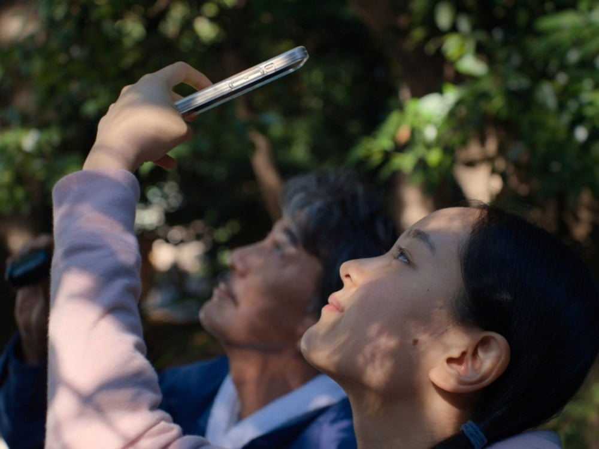
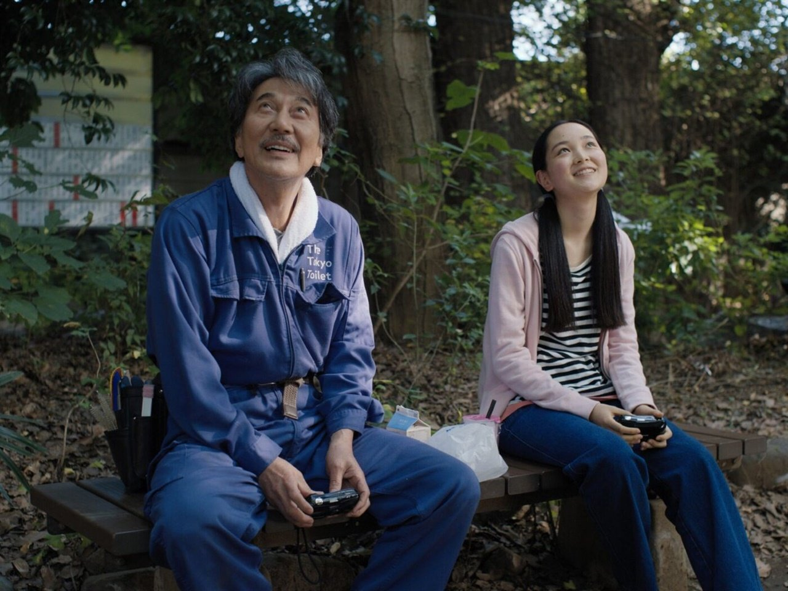

《퍼펙트 데이즈》를 보고 나면 이상하게 카메라 한 대가 오래 남는다.
빔 벤더스의 《퍼펙트 데이즈》(2023). 도쿄에서 공중화장실을 청소하는 히라야마(야쿠쇼 코지)는 디지털이라곤 거의 없는 삶을 산다. 카세트테이프로 음악을 듣고, 자기 전엔 문고본을 읽고, 점심때가 되면 늘 같은 공원 벤치에 앉아 카메라를 든다. 그 카메라가 올림푸스 뮤다. 야쿠쇼 코지는 이 조용한 남자로 2023년 칸영화제 남우주연상을 받았다.
뮤 한 대면 충분하다

히라야마의 뮤는 대단한 장비가 아니다. 손바닥에 들어오는 작은 콤팩트 필름 카메라. 35mm 단렌즈 하나에 조리개는 f3.5, 뚜껑을 밀면 켜지고 대충 겨눠 누르면 찍힌다. 조리개가 어떻고 셔터가 어떻고 따질 것이 없다. 영화는 바로 그 단순함 때문에 이 카메라를 골랐다. 설정에 붙들리지 않으니 눈앞의 빛에만 집중할 수 있다. 좋은 사진이 장비에서 나오지 않는다는 걸, 이 남자는 매일 증명한다.
코모레비, 오늘의 빛은 오늘뿐
그가 찍는 건 늘 같은 것이다. 코모레비(木漏れ日). 나뭇잎 사이로 새어드는 햇빛, 그 흔들리는 그림자다. 일본어에 이런 단어가 따로 있다는 것부터가 이 영화답다. 재미있는 건, 매일 같은 나무 아래 같은 벤치에서 찍는데도 같은 사진이 하나도 없다는 점이다. 바람이 다르고 구름이 다르고 잎의 각도가 다르다. 코모레비는 그 순간에만 있고 다시 오지 않는다.

그래서 필름이다. 무한정 찍고 지우는 게 아니라, 한 프레임씩 아껴 담는 매체. 두 번 없는 빛에는 두 번 없는 방식이 어울린다. 흑백으로 담은 건 우연이 아닐 것이다. 색을 덜어내면 빛과 그림자만 남는다. 코모레비의 본질만.
현상소에서 기다리는 시간

디지털이라면 찍자마자 뒷면 액정으로 확인하고 끝이다. 히라야마는 그러지 않는다. 다 찍은 필름을 동네 사진관에 맡기고, 새 필름을 받아 넣고, 며칠 뒤 인화된 프린트를 찾으러 간다. 찍는 순간과 보는 순간 사이에 시간이 있다. 그 사이를 기다리는 일까지가 그의 사진이다. 잘 나온 것만 골라 상자에 차곡차곡 쌓아두는 마지막 정리까지. 파일 폴더에 쌓이는 이미지와는 무게가 다르다.
다음은 다음에, 지금은 지금

영화에 이런 대사가 있다. "다음은 다음에, 지금은 지금." 히라야마가 조카에게 건네는 말이다. 그의 사진도 딱 그렇다. 완벽한 한 장을 노리는 게 아니라, 오늘의 빛을 오늘 담고 내일은 또 내일의 빛을 담는다. 매일 같은 자리에 앉는 성실함, 그리고 매일 조금씩 다른 결과를 받아들이는 태도. 필름 사진을 오래 찍어 본 사람이라면 이 리듬이 낯설지 않을 것이다.

우리가 필름을 놓지 못하는 이유도 여기 어딘가에 있다. 빠르게 찍고 빠르게 지우는 시대에, 한 롤을 아껴 감으며 오늘 하루를 들여다보는 일. 히라야마의 뮤가 오래 남는 건, 그게 결국 카메라 이야기가 아니라 하루를 대하는 태도에 관한 이야기이기 때문이다. 다음 점심시간엔, 당신도 고개를 한번 들어보길.